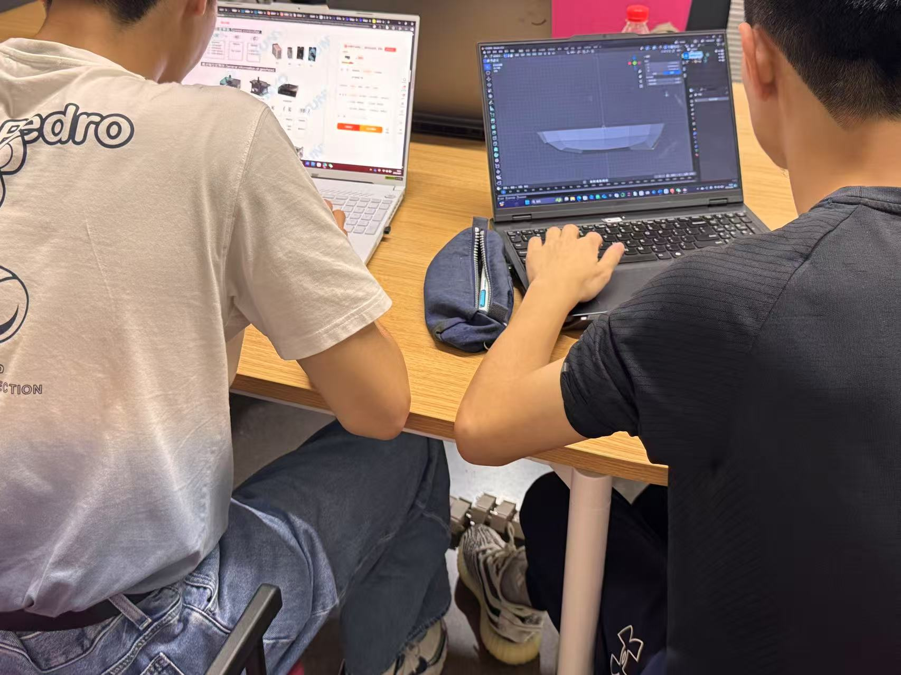
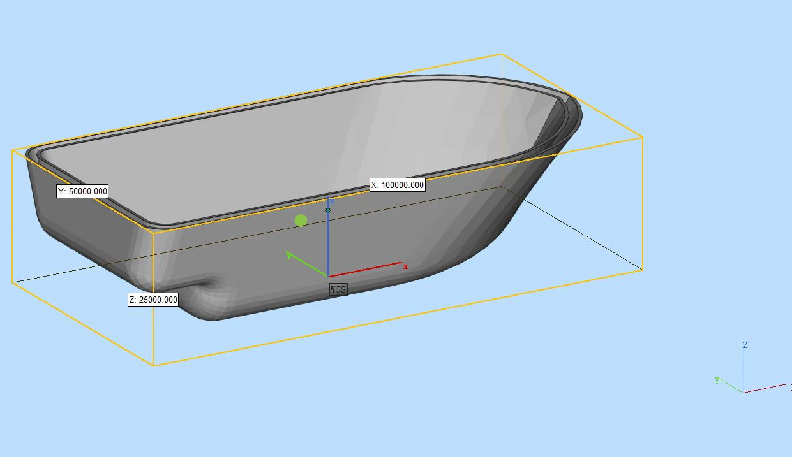
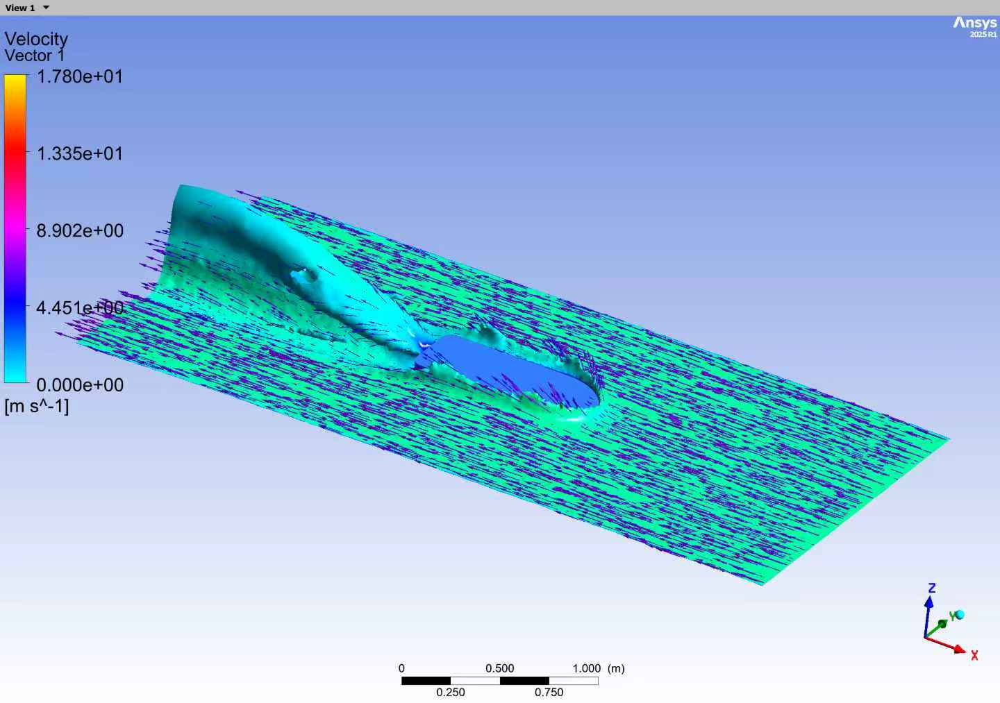
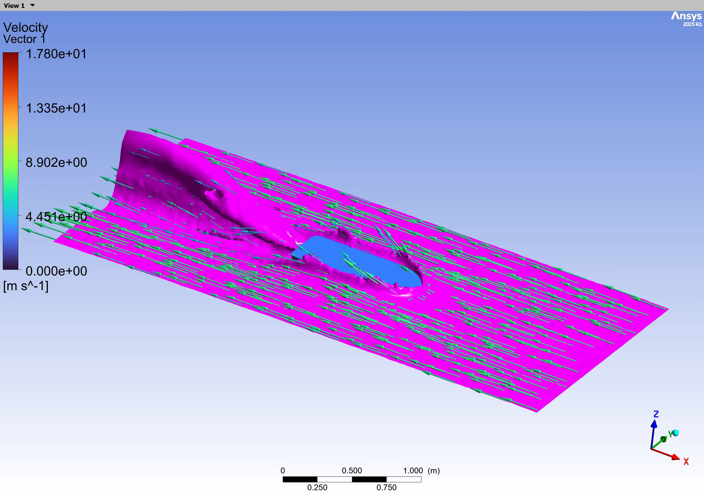
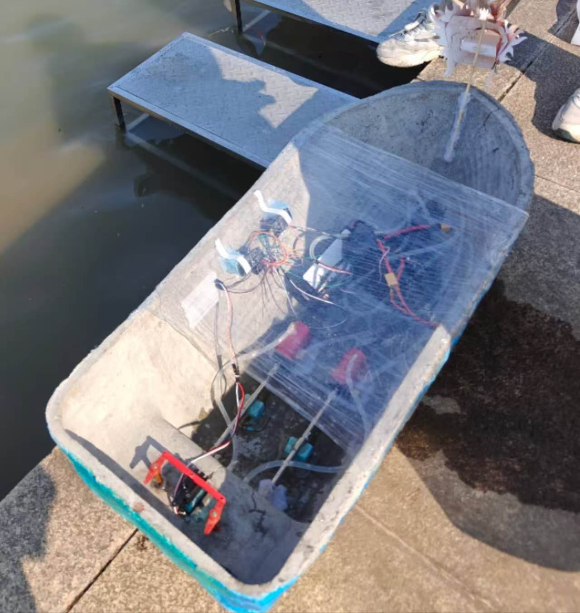
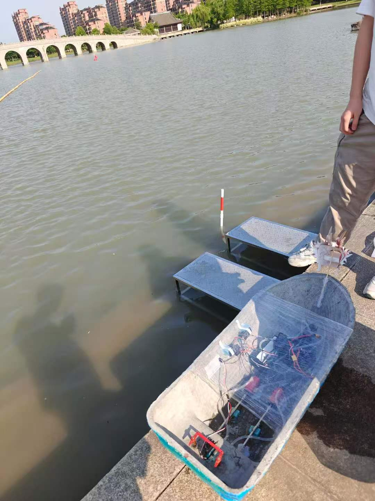
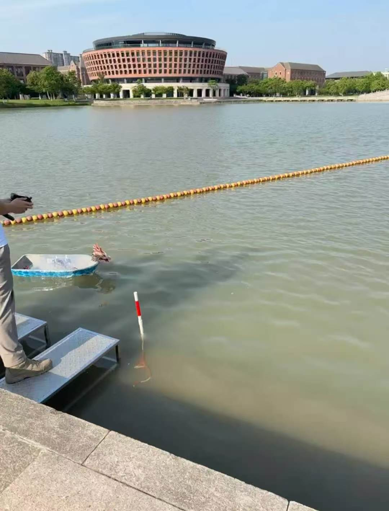

Project overview
The boat was designed as a small remotely controlled concrete vessel for a university competition. The system used two propellers for differential thrust together with two rudders for steering, combining a reinforced concrete hull with onboard electronics, actuators, and waterproofed hardware integration.
My contribution
System & mechanical design
- Proposed the overall vessel configuration using dual propellers and dual rudders.
- Selected major propulsion, steering, and onboard components.
- Reviewed the hull model in Autodesk Fusion and checked system packaging.
Fabrication, hardware & control
- Participated throughout hull fabrication, assembly, and final system integration.
- Designed component mounting and electrical wiring inside the hull.
- Programmed the ESP32-based rudder control, mapping PWM input to servo commands.
- Served as the boat operator during competition runs.
During build and competition preparation, I also handled several time-critical hardware problems: carefully re-straightening a bent motor shaft, sourcing and installing a replacement propeller after the original set failed, and adapting the boat to differential-thrust-only steering when one rudder became unusable.
Design & simulation
Before fabrication, the hull geometry and internal packaging were developed digitally. The team also used flow simulation to examine the hull concept and visualize the surrounding velocity field before committing to the physical build.




Fabrication & assembly
I participated throughout the multi-step build process, which combined 3D-printed molds, steel-wire reinforcement, concrete casting, surface finishing, waterproofing, and final installation of propulsion and control hardware.
System integration & testing
After the hull was completed, I continued with propulsion, steering, power, and control integration and debugging. Testing progressed from bench-side checks to water trials and finally full operation on the competition lake, where I also served as the operator.



Competition result
The team received Third Prize in the 6th Zhejiang University Concrete Dragon Boat Competition in 2025.